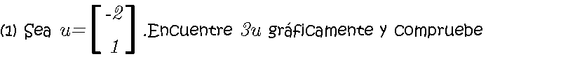
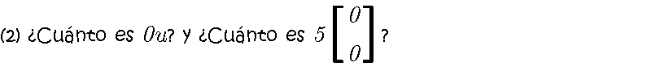
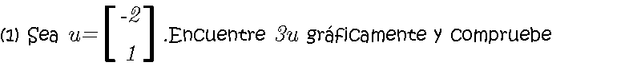
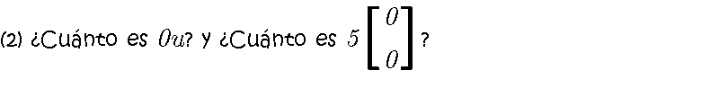

Al multiplicar un escalar por una matriz, el escalar multiplica cada elemento de la matriz. El dibujo queda del doble del tamaño. Cada punto queda al doble de la distancia respecto al origen
 


